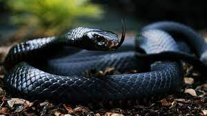
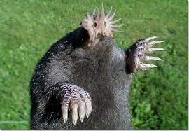
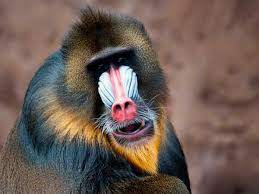

Animales
Definicion
los animales (Animalia) o metazoos (Metazoa) constituyen un reino que reúne un amplio grupo de organismos que son eucariotas, heterótrofos, pluricelulares y tisulares (excepto los poríferos). Se caracterizan por su amplia capacidad de movimiento, por no tener cloroplasto (aunque hay excepciones, como en el caso de Elysia chlorotica) ni pared celular, y por su desarrollo embrionario; que atraviesa una fase de blástula y determina un plan corporal fijo (aunque muchas especies pueden sufrir una metamorfosis posterior como los artrópodos). wiki
Por otra parte el ser humano ha clasificado a los animales como peligrosos, venenosos, inteligentes, lentos, entre o tros. Por tal motivo en este documento se estudiaran algunas de esas clasificaciones.
Animales peligrosos

Los hipopótamos se han ganado a pulso su reputación de animales temibles debido a su gran agresividad, sobre todo cuando hay crías cerca. Igual que los cocodrilos, tienen una mandíbula grande y una mordida muy potente, además de ser muy corpulentos y difíciles de derribar. Causan unas 500 muertes anuales y se consideran los mamíferos más peligrosos de África, capaces incluso de matar cocodrilos.
Animales lentos
El perezoso (Choloepus hoffmanni) lleva la batuta como el animal más lento del mundo, tanto que da "pereza" verlo. Su nombre ha sido usado en diversas frases cuando nos referimos a la extrema lentitud y hasta al aburrimiento.
Animales inteligentes

El pulpo es considerado el invertebrado más inteligente del mundo. Tiene un alto grado de desarrollo neurológico y una gran capacidad de aprendizaje. Tienen extraordinarias habilidades para sobrevivir y resolver problemas. Por ejemplo, pueden destapar frascos y aprender de sus errores.
Animales extremadamente grandes
Después de las gigantescas cifras del cuerpo de la ballena azul, cualquier animal a su lado resulta insignificante. Si valoramos tamaño, entendido como longitud y peso, no hay duda de que ningún ser vivo puede hacerle sombra. Sin embargo, en función del largo solamente, sí hay dos animales que están por delante. Uno de ellos es una medusa. Llamada así por su aspecto enmarañado, su campana es de “solo” dos metros, pero con sus tentáculos llegan a los 37 metros. Habita los océanos del Atlántico y del Pacífico.
Animales extremadamente pequeños

La musaraña o Suncus etruscus es el mamífero más pequeño en cuanto a su peso, ya que, en algunas ocasiones baja de los 2 gramos, y mide entre 3,6 y 5,3 cm siendo así mayor que el murciélago nariz. La musaraña es originaria del centro y norte de África, aunque se extiendo por toda el área del Mar Mediterráneo
Animales rapidos

El animal más rápido del mundo es un tipo de ácaro llamado Paratarsotomus macropalpis. A pesar de lo increíble que parece pensar en un ácaro siendo más rápido que un guepardo, lo cierto es que esta especie, con un tamaño similar al de una semilla de sésamo, puede moverse a 322 longitudes de cuerpo por segundo.
Animales venenosos
Ésta es una especie de serpiente africana que se distingue de las demás por su rapidez de ataque. Cuando se siente en peligro, puede ser muy violenta y letalmente venenosa. Incluso, aparece varias veces en diversos mitos de las tribus subsaharianas, en los que se le atribuyen poderes mágicos de destrucción.
Animales extraños
Conocido científicamente como Condylura cristata, se trata de una especie de mamífero soricomorfo que se puede encontrar en el continente norteamericano, especialmente en la costa nordeste de Estados Unidos. Los adultos miden de 15 a 20 cm de longitud, pesan unos 56 gramos y poseen 44 dientes. El carácter distintivo de esta especie es la presencia de 22 tentáculos rosados, móviles y flexibles al final del hocico. Dichas prolongaciones poseen una gran sensibilidad táctil; tanto en la oscuridad como fuera de ella son esenciales en la captura de gusanos, insectos y crustáceos.
Animales en via de extinción
El estilo lo es todo cuando vives en un grupo tan grande como el de un mandril. Con una tropa de 1.300 ejemplares una vez registrada en los bosques de Gabón, se cree que los mandriles forman los grupos sociales más grandes de primates no humanos. Con sus llamativas caras y ojos, han evolucionado para exhibir la coloración más espectacular de cualquier especie de mamífero, cuya intensidad indica su estado social y sexual. Lamentablemente, no es solo su apariencia lo que es atractivo. La carne de mandril se considera un manjar en el oeste de África, y es parte de un comercio en crecimiento, con toneladas de carne de animales silvestres introducidas de contrabando en el oeste de Europa a diario. Debido a que los mandriles viven en grupos tan grandes, gran parte de su población puede caer en el comercio en auge en una sola cacería. La tala y la agricultura también están limitando sus lugares de refugio, por lo que estos notables animales necesitan urgentemente una protección más eficaz.